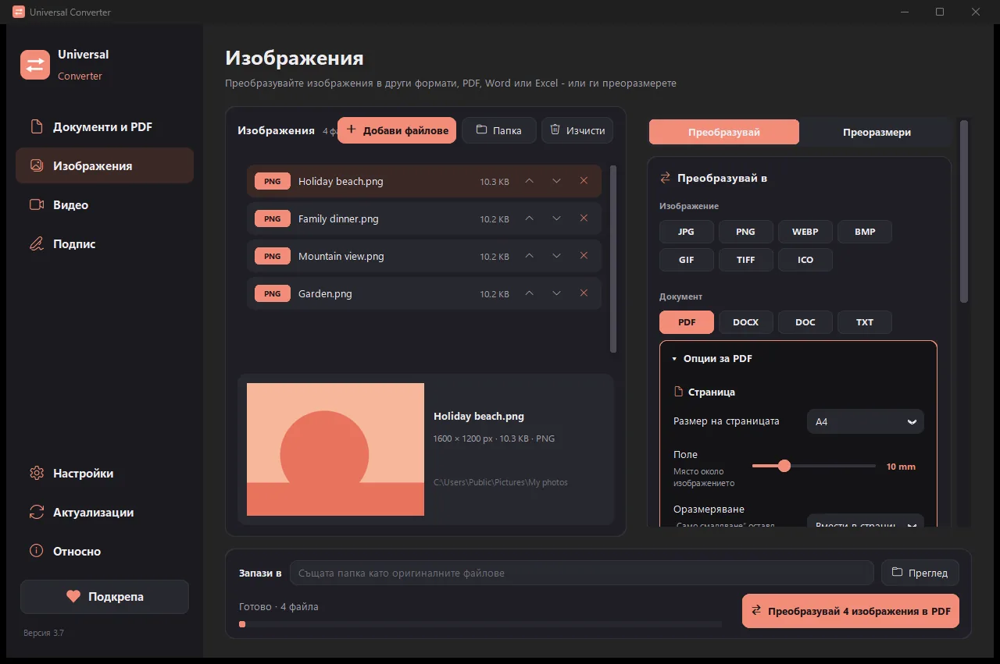
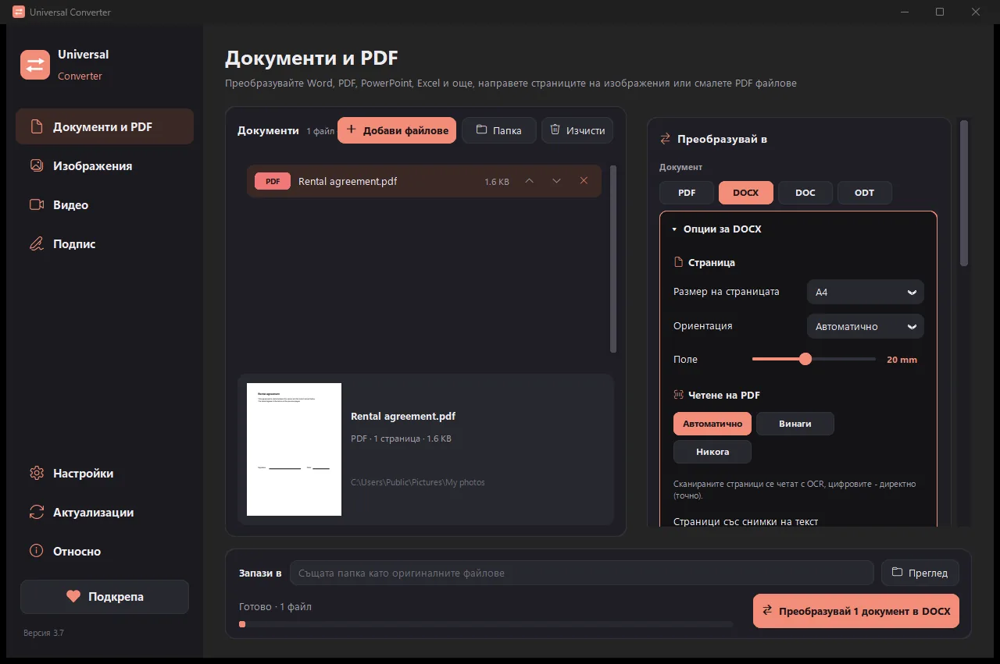
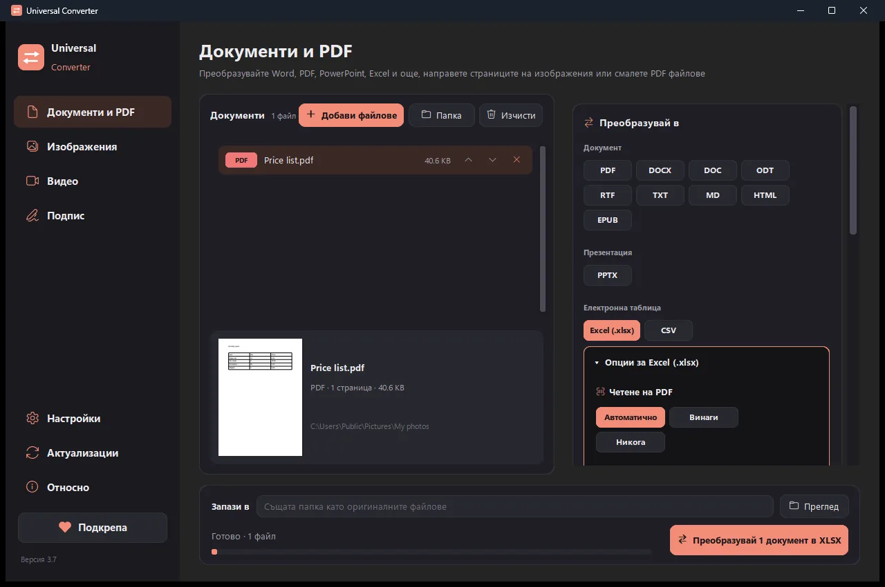

Преобразувайте файловете си на собственото си устройство
Изображения, документи, видео и аудио, PDF и таблици в Excel - всичко в едно приложение. Нищо не се качва: файловете ви никога не напускат устройството.
Как се инсталира и актуализира
- Отворете изтегления .dmg файл и плъзнете Universal Converter в „Програми“.
- Отворете приложението. Първия път macOS го блокира, защото не е подписано от Apple: щракнете „Готово“.
- Отворете „Системни настройки“ > „Поверителност и сигурност“, превъртете надолу, щракнете „Отвори въпреки това“ и въведете паролата си. Правите това само веднъж.
Актуализации: ако разрешите при първото отваряне на приложението, то търси нови версии при всяко стартиране, проверява цифровия им подпис и ги инсталира, когато изберете.
Как се инсталира и актуализира
- Докоснете „Изтегляне за Android“ на телефона си.
- Отворете изтегления файл. Ако Android попита, разрешете на браузъра или файловия мениджър да инсталира приложения.
- Докоснете „Инсталиране“.
Актуализации: приложението проверява около веднъж на ден и ви казва, когато има готова нова версия. Изтеглете я по същия начин и я инсталирайте върху старата; настройките ви се запазват.
Как се инсталира и актуализира
- Изтеглете файла .AppImage.
- Направете го изпълним: щракнете с десния бутон, отворете Свойства > Права и разрешете стартиране като програма (или в терминал: chmod +x Universal-Converter-*.AppImage).
- Щракнете два пъти върху него. Нищо не се инсталира: приложението е този един файл.
Актуализации: ако разрешите при първото отваряне, приложението при всяко стартиране търси нови версии, проверява цифровия им подпис и заменя файла AppImage там, където се намира.

Поверително
Всичко работи на вашето устройство. Без качване, без опашка, без ограничения в размера.
Безплатно
Безплатно за ползване, без реклами, без профил и без воден знак.
34 езика
Английски, гръцки, испански, италиански, немски, френски, португалски (Португалия и Бразилия), полски, руски, арабски, иврит, китайски, японски, корейски, тамилски, африкаанс, йоруба, хауса, хинди, индонезийски, турски, виетнамски, шведски, нидерландски, датски, украински, чешки, румънски, български, норвежки, малайски, филипински и суахили.
Пет инструмента в един прозорец

Документи и PDF
Преобразуване между PDF, Word, ODT, RTF, TXT, Markdown, HTML, EPUB, PowerPoint и Excel. Страници в изображения и няколко файла в един PDF. Шрифтовете, размерите и цветовете се запазват. По-малки PDF файлове, до размера, който изберете. Сканиранията и попълнените формуляри стават редактируем текст и таблици, подредени като страницата. Таблиците, дори без линии като в банковите извлечения, влизат в Word като истински таблици, а старите файлове на Word (.doc) и PowerPoint (.ppt) се отварят.
Изображения
Преобразуване между JPG, PNG, WEBP, TIFF, BMP, GIF и ICO. Преоразмеряване по пиксели, процент или размер на файла, обединяване на изображения във файл PDF или Word и четене на текста в изображения (OCR). Може да добавите и PDF: всяка страница става изображение.

Видео
Преобразувайте видео между MP4, MKV, WebM, MOV и AVI и го компресирайте с AV1, H.265, H.264 или VP9. Отрязвайте, изрязвайте, завъртайте и преоразмерявайте, правете GIF, запазвайте кадри като изображения или задръжте само звука като MP3, M4A, FLAC, WAV, OGG или Opus. При няколко видеоклипа всеки може да има собствени настройки. На Android: MP4, MKV, WebM, MOV или GIF, или звукът като M4A, OGG или WAV; отрязване, изрязване, завъртане, преоразмеряване и запазване на кадри.

Excel
Изваждане на таблици от PDF, сканирания и снимки в Excel или CSV: банкови извлечения, фактури, ценови листи. Чете гръцки, английски, испански и над 30 други езика.

Подпис
Подписвайте PDF и попълвайте формуляри. Напишете името си в ръкописен стил, нарисувайте подписа си или използвайте негова снимка. Приложението само намира редовете за подпис, или щраквате или докосвате там, където да са подписът, инициалите, датата, текстът или отметките. Подписвайте много файлове наведнъж; оригиналите остават непокътнати.
- Използва видеокартата за видео, когато може: обикновено от 5 до 20 пъти по-бързо.
- Плъзнете цели папки: всички файлове се преобразуват наведнъж.
- Казва ви, когато файл е за друг раздел, и го пренася там с едно щракване.
- Съобщава за нови версии; на Windows, Mac и Linux може да ги инсталира вместо вас, с цифрова проверка.
- Светъл и тъмен вид, според вашето устройство.
Как работи
- Отворете Universal Converter и изберете Документи и PDF · Изображения · Видео · Подпис вляво.
- Плъзнете файловете си или цяла папка в прозореца или щракнете Добави файлове.
- Щракнете Преобразувай. Новите файлове се записват до оригиналите или в папката, която изберете.
Какво може
- Преобразувайте PDF в Word
- Преобразувайте документи на Word в PDF
- Обединете няколко файла в един PDF
- Компресирайте PDF до размер, който изберете
- Компресирайте PDF до 100 KB, 200 KB или какъвто и да е размер за онлайн формуляри
- Преобразувайте страници от PDF в изображения JPG
- Превърнете сканиран документ в редактируем файл на Word
- Преобразувайте изображения между JPG, PNG, WEBP и други
- Преоразмерете изображения или ги намалете до размер на файла
- Преоразмерете снимка или подпис до 20 KB, 50 KB или точни пиксели
- Обединете снимки в един PDF
- JPG в PDF под 100 KB
- Копирайте текста от изображение (OCR)
- Компресирайте видео, без да го качвате
- Преобразувайте видео между MP4, MKV, WebM, MOV и AVI
- Запазете звука от видео като MP3
- Направете GIF от видео
- Пренесете таблици от PDF в Excel
- Преобразувайте банково извлечение в PDF в Excel
- Извлечете таблици от фактури в PDF в Excel
- Подпишете PDF
- Попълнете PDF формуляр
Въпроси
Наистина ли е безплатно?
Да. Universal Converter е безплатно за ползване, без реклами, без профил и без ограничение във времето. Ако ви помага, можете да подкрепите разработката с доброволна вноска, но никога не е задължително.
Качват ли се файловете ми някъде?
Не. Всяко преобразуване става на собственото ви устройство, затова работи и без интернет връзка. Приложението излиза в интернет само за да търси актуализации, да изтегли избраните от вас азбуки за разпознаване на текст и, ако разрешите, да изпраща анонимни отчети за грешки.
Безопасно ли е изтеглянето?
Да. Преди да бъдат публикувани на тази страница, изтеглянията за Windows, Mac, Linux и Android на всяка версия се проверяват от около 60–70 антивирусни програми във VirusTotal; връзката под всеки бутон за изтегляне отваря отчета за този файл. Приложението не показва реклами и не събира лични данни, а версията от Microsoft Store също се проверява и подписва от Microsoft.
Windows показва предупреждение на SmartScreen. Нормално ли е?
Да. Инсталаторът все още няма подпис на кода, затова Windows не го разпознава. Изберете „Повече информация“, а след това „Изпълни въпреки това“. Следващите актуализации се проверяват цифрово от самото приложение. Или го инсталирайте от Microsoft Store, където няма предупреждение.
Как да го отворя на Mac?
Отворете изтегления файл и плъзнете Universal Converter в „Програми“. Приложението не е подписано от Apple, затова при първото отваряне macOS го блокира: щракнете „Готово“, след това отворете „Системни настройки“ > „Поверителност и сигурност“, щракнете „Отвори въпреки това“ и въведете паролата си. Правите това само веднъж.
Как да го инсталирам на Android?
Изтеглете APK файла на телефона си, отворете го и разрешете инсталирането, когато бъдете попитани (Android 10 или по-нова). Всички 34 езика са вградени; изберете един в настройките на приложението. Приложението ви казва, когато има нова версия.
На какви езици е?
Приложението е на английски, гръцки, испански, италиански, немски, френски, португалски (Португалия и Бразилия), полски, руски, арабски, иврит, китайски, японски, корейски, тамилски, африкаанс, йоруба, хауса, хинди, индонезийски, турски, виетнамски, шведски, нидерландски, датски, украински, чешки, румънски, български, норвежки, малайски, филипински и суахили. Избирате в инсталатора или по-късно в Настройки.